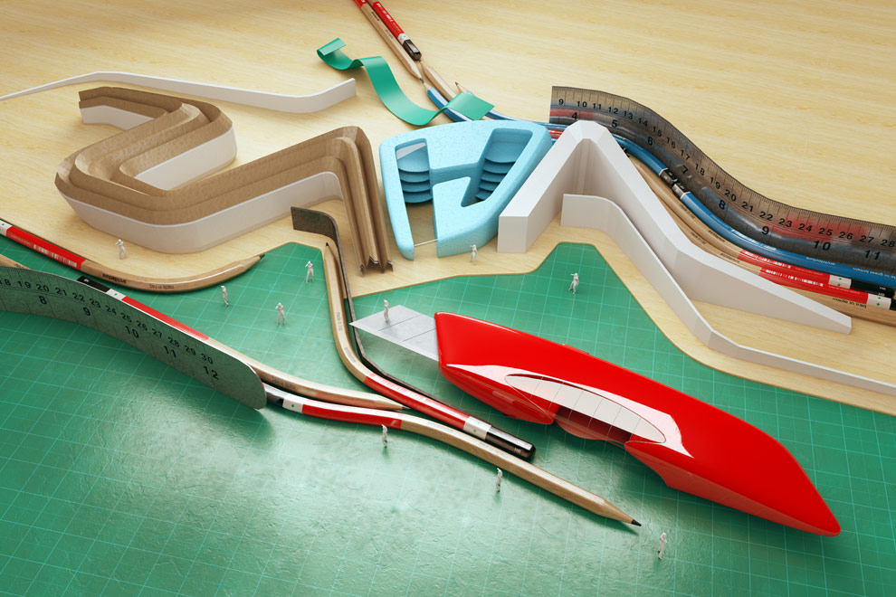
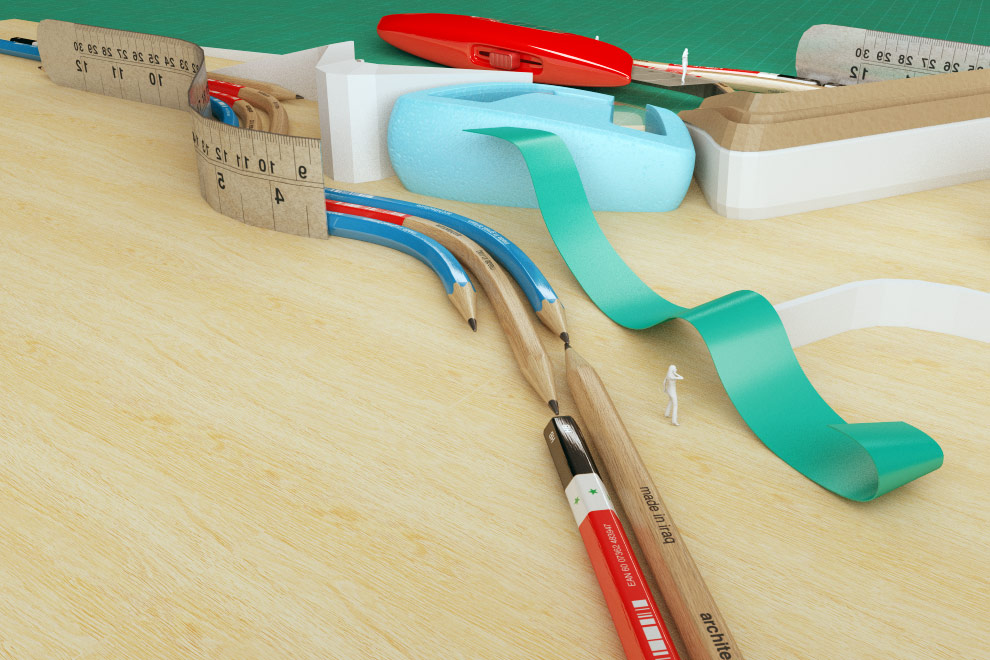
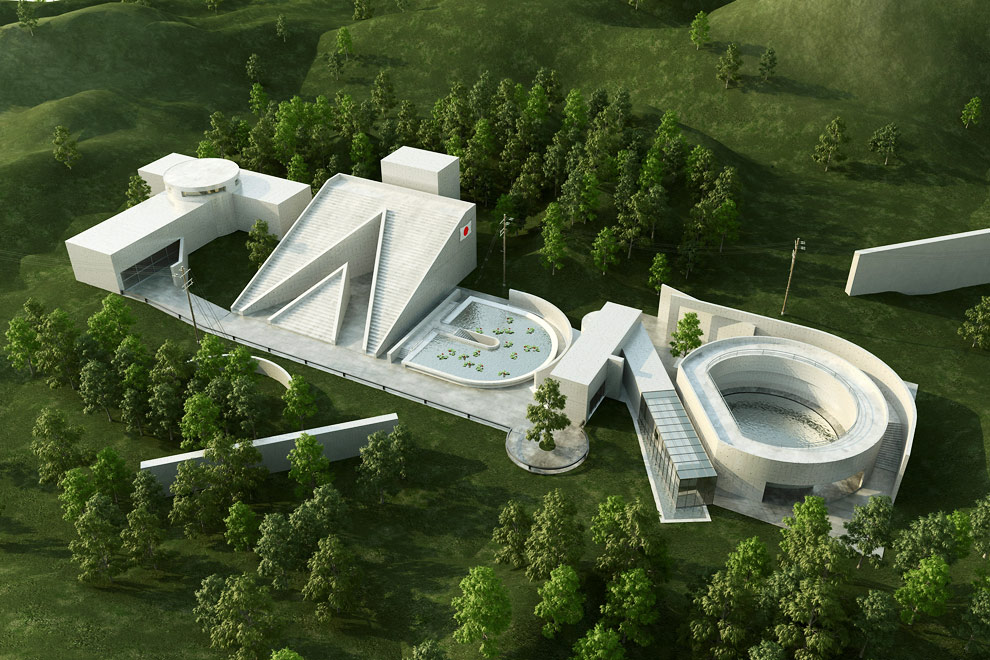
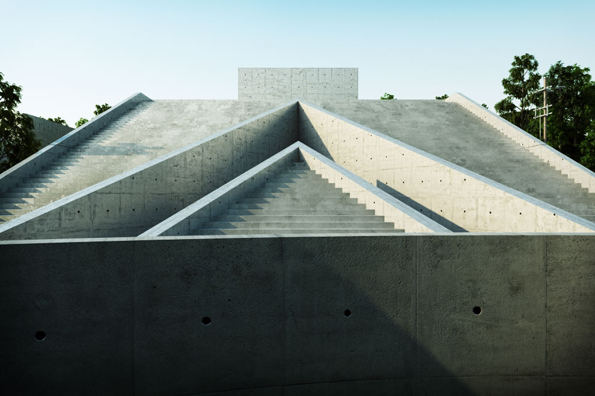
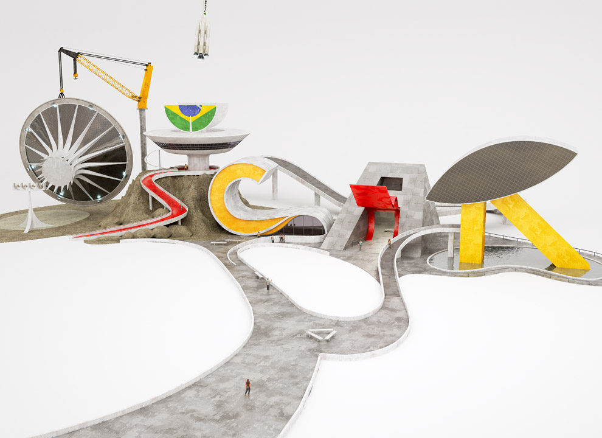
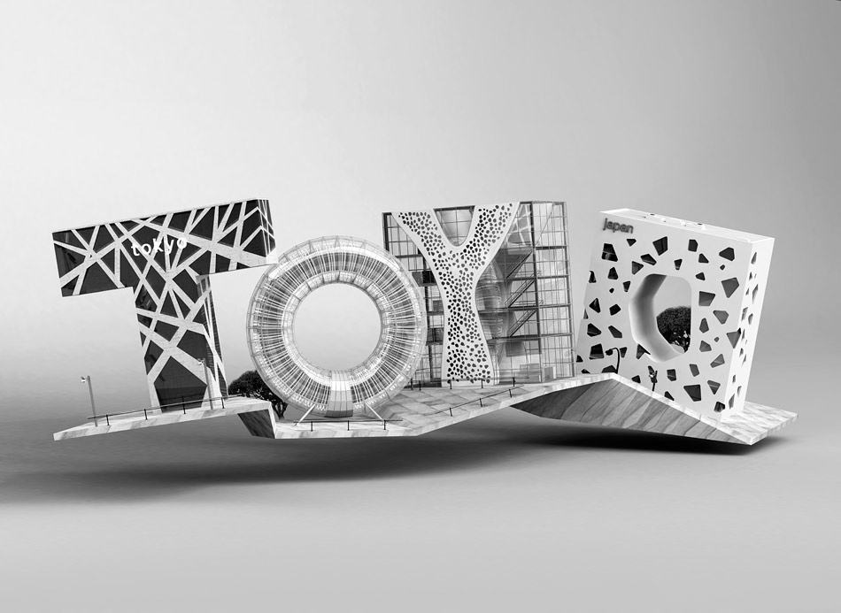

Architecture Type
Combining 3D art, graphic design, typography and architecture, Chris Labrooy created a series of renders inspired by the architectural style of Zaha Hadid, Tadao Ando, Oscar Niemeyer, and Toyo Ito. The detail and imagination that went into each of the pieces is quite inspiring.